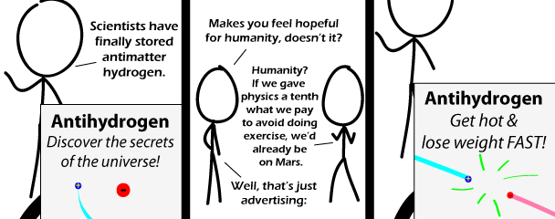

Comic JK 559
When I Feel Like It
⇤
<
?
>
⇥

⇤
<
?
>
⇥
Forum
.
RSS
.
Digg
.
Facebook
.
Reddit
.
Twitter
.
Stumbleupon
Enter your thoughts on number 559 here. Please, no spamming, trolling, phreaking, or losing weight. > So getting hot is allowed? Your mother needs lots of antihydrogen just to counteract her farts. Hey, have they really managed to store it safely? > For 0.2 seconds... >> For antihydrogen, that's practically a lifetime. >>>What do you mean "a lifetime"? >>>> They stored it for long enough to show that it was stable. Problem is that it takes so much energy to produce so little. >>>> It WAS the antihydrogen's lifetime. ...does that ad show a positron and an anti-proton colliding? > Hey, you're right, it does >> Antiproton sounds boring. I propose negatron! >>> You know, the other day, I had a conversation about that subject. >>> I'd rather call it a negaton, and resevere negatron for the electron. >>>> Lenz-a-tron, anyone? >>>>> Wasn't there a tron movie coming out some day? >>>>>> Tron Legacy, yeah. Apparently, some marketing twat thought it a good idea to call it Tron 2.0 at some places, and some other marketing twat called it Tr2n. >>> Negatron? What's that? A nagging Transformer? >>>> No, that's a nag-a-tron >>>>> So Negatron just has a faulty ALU?